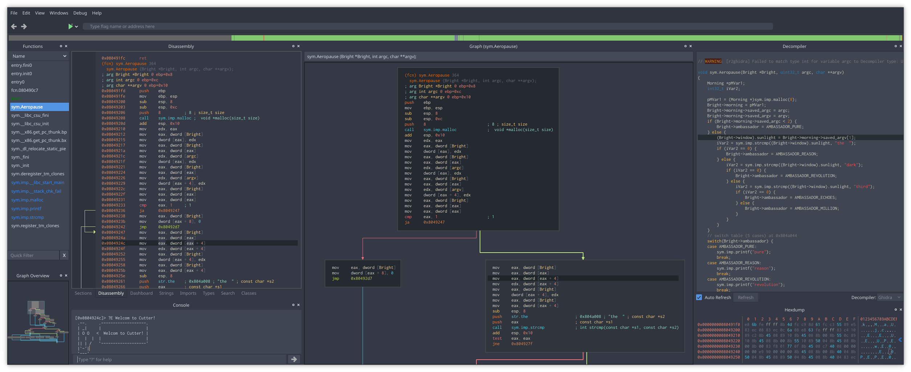

Cutter¶
Cutter is a Qt and C++ GUI for radare2. Its goal is to provide an advanced, customizable and FOSS reverse-engineering platform while keeping the user experience in mind. Cutter was created by reverse engineers for reverse engineers.
Get Cutter¶
Cutter is available for all platforms (Linux, OS X, Windows). You can download the latest release here.
OSX: Download the latest
.dmgfile.Windows: Download the latest archive.
Linux: use the AppImage file. Then just make it executable and run it:
chmod +x Cutter-v1.10.2-x86_64.AppImage
Building from sources¶
To build Cutter on your local machine, please follow this guide: Building from source
Need help?¶
You can contact the Cutter developers and community on:
Telegram: https://t.me/r2cutter
#cutter on irc.freenode.net
Twitter: https://twitter.com/r2gui
Want to help the project?¶
If you want to contribute to Cutter, take a look here to learn how you can help improve the project!